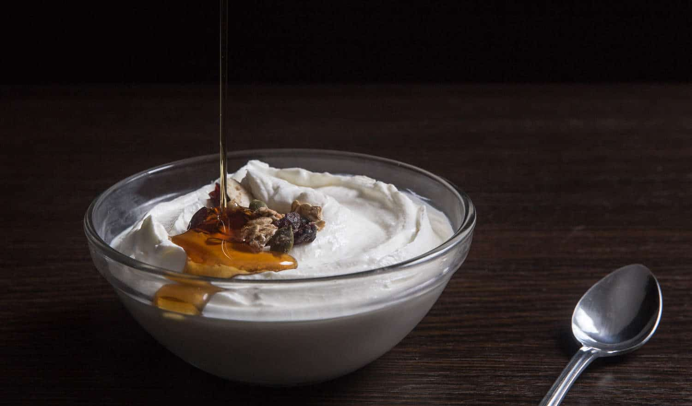

Greece
Greek cuisine (Greek: Ελληνική κουζίνα, romanized: Elliniki kouzina) is a Mediterranean cuisine.

Contemporary Greek cookery makes wide use of vegetables, olive oil, grains, fish, wine (white and red), and meat (including lamb, poultry, veal, beef, rabbit, and pork). Other important ingredients include olives, pasta (especially hilopites, a kind of pasta similar to tagliatelle), cheese, lemon juice, herbs, bread, and yogurt. The most commonly used grain is wheat; barley is also used. Common dessert ingredients include nuts, honey, fruits, and filo pastries. It is strongly influenced by Ottoman cuisine and thus, (especially the cuisine of Anatolian Greeks), shares foods such as baklava, tzatziki, moussaka, dolmades, yuvarlakia and keftedes with Turkey and the neighboring countries. It is also influenced by Italian cuisine and cuisines from the northern countries. Additionally, in specific regions it includes several kinds of pasta, like hilopites, goglies (goges) etc
History
Greek cuisine has a culinary tradition of some 4,000 years and is a part of the history and the culture of Greece. Its flavors change with the season and its geography.[2] Greek cookery, historically a forerunner of Western cuisine, spread its culinary influence, via ancient Rome, throughout Europe and beyond.[3] It has influences from the different people's cuisine the Greeks have interacted with over the centuries, as evidenced by several types of sweets and cooked foods. Ancient Greek cuisine was characterized by its frugality and was founded on the "Mediterranean triad": wheat, olive oil, and wine, with meat being rarely eaten and fish being more common.[4] This trend in Greek diet continued in Roman and Ottoman times and changed only fairly recently when technological progress has made meat more available. Wine and olive oil have always been a central part of it and the spread of grapes and olive trees in the Mediterranean and further afield is correlated with Greek colonization.[5][6] Byzantine cuisine was similar to the classical cuisine, with the addition of new ingredients, such as caviar, nutmeg and basil. Lemons, prominent in Greek cuisine and introduced in the second century, were used medicinally before being incorporated into the diet. Fish continued to be an integral part of the diet for coastal dwellers. Culinary advice was influenced by the theory of humors, first put forth by the ancient Greek doctor Claudius Aelius Galenus.[7] Byzantine cuisine benefited from Constantinople’s position as a global hub of the spice trade.
